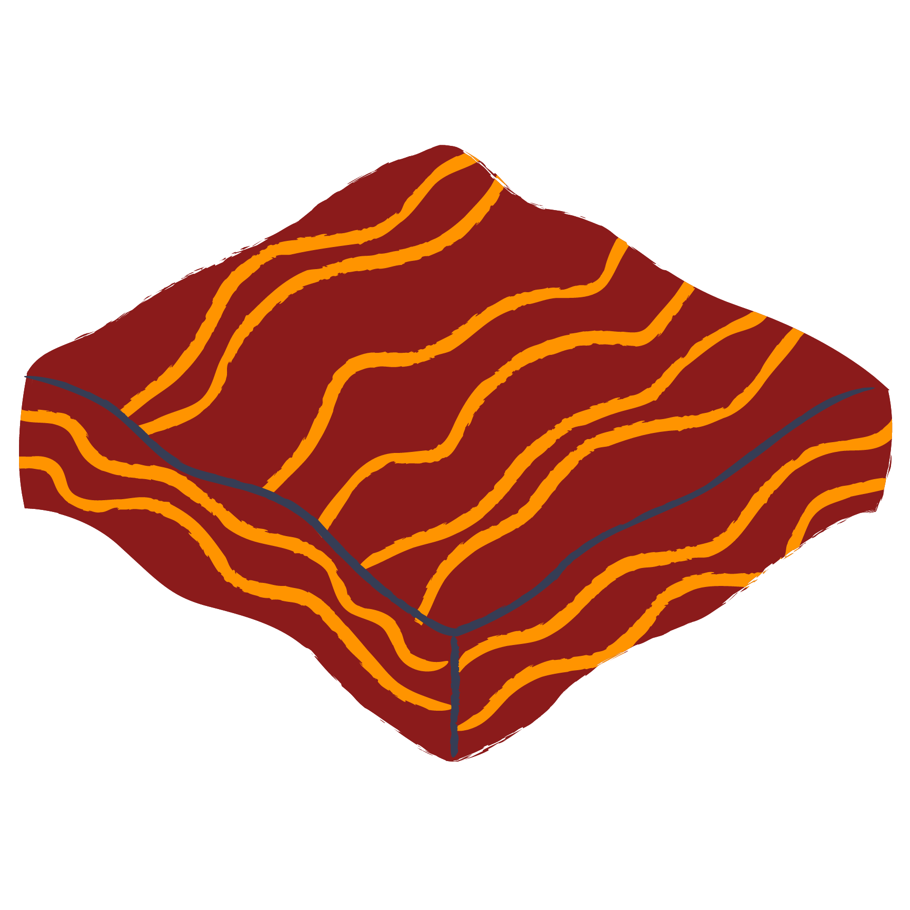

CRUST
Definition and Composition:
→ The crust is the outermost layer of Earth.
→ It’s the thin shell that covers our planet.
→ Made of solid rocks and minerals.
→ Contains all known life on Earth.
Types of Rocks:
→ Igneous: Formed from cooling magma (e.g., granite, basalt).
→ Metamorphic: Changed by heat and pressure (e.g., slate, marble).
→ Sedimentary: Formed from sediment (e.g., sandstone, limestone).
Tectonic Plates:
→ Crust broken into plates.
→ Movement causes earthquakes and volcanoes.
Geological Forces:
Continental Crust:
→ Plate tectonics shape the crust.
→ It’s a dynamic layer interacting with other Earth parts.
UPPER MANTLE

Definition:
→ The mantle lies between Earth’s dense, super-heated core and its thin outer layer, the crust.
→ It’s about 2,900 kilometers (1,802 miles) thick.
→ Makes up a whopping 84% of Earth’s total volume.
Rock Composition:
→ Mostly silicate rocks.
→ Common minerals: olivine, garnet, and pyroxene.
→ Also contains magnesium oxide.
Temperature and Pressure:
→ Varies from 1000°C (1832°F) near the crust to 3700°C (6692°F) near the core.
→ Heat and pressure increase with depth.
Geological Impact:
→ Drives plate tectonics, causing volcanoes, earthquakes, and mountain-building.
→ Divided into layers: upper mantle, transition zone, lower mantle, and D” (where it meets the outer core).
LOWER MANTLE
Definition:
→ The lower mantle represents approximately 56% of Earth’s total volume.
→ It extends from a depth of 660 kilometers (410 miles) to about 2,900 kilometers (1,796 miles) below Earth’s surface.
Composition:
→ Made of rock containing elements like iron, oxygen, silicon, magnesium, and aluminum.
→ The lower part is partially melted, while the upper region is stiffer due to cooler temperatures.
Physical Properties:
→ Temperature: Ranges from 1,960 K (1,690°C; 3,070°F) at the topmost layer to 2,630 K (2,360°C; 4,270°F) at its deepest point.
→ Pressure: Varies from 24–127 GPa.
→ Minerals: Contains three major phases: bridgmanite, ferropericlase, and calcium-silicate perovskite.
Layers:
→ 660–770 km: Transformation of mineral ringwoodite to bridgmanite and ferropericlase.
→ 770–2,700 km: Gradual increase in velocity due to adiabatic compression.
→ 2,700–2,900 km: Transition from the lower mantle to the outer core.
OUTER CORE

Definition:
→ It is primarily composed of molten iron and nickel.
→ It lies above the solid inner core and below the mantle.
Composition:
→ Mostly composed of iron and nickel.
→ Unlike the inner core, which is solid, the outer core remains liquid due to lower pressure.
Properties:
→Temperature: Ranges from approximately 2,700–4,200°C; 4,900–7,600°F in its outer region to 3,700–7,700°C; 6,700–14,000°F near the inner core.
→Viscosity: The outer core is a low-viscosity fluid that convects turbulently.
Growth and Cooling:
→ As Earth’s core cools, the liquid at the inner core boundary freezes, causing the solid inner core to grow.
→ This process consumes approximately 80,000 tonnes of iron per second.
INNER CORE
Definition:
→ The inner core lies at the very center of Earth.
→ It’s a solid ball with a radius of about 1,220 kilometers (760 miles).
Composition:
→ Mostly composed of an iron-nickel alloy with some other elements.
→ No direct samples are accessible, but we infer its properties from seismic waves and Earth’s magnetic field.
Temperature and Pressure:
→ Surface temperature: Approximately 5,700 K (5,430°C; 9,800°F)—similar to the Sun’s surface.
→ Pressure: Nearly 3.6 million atmospheres.
Role:
→ Generates Earth’s magnetic field due to iron’s motion.
→ Despite extreme heat, immense pressure keeps it solid.